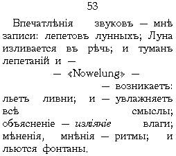
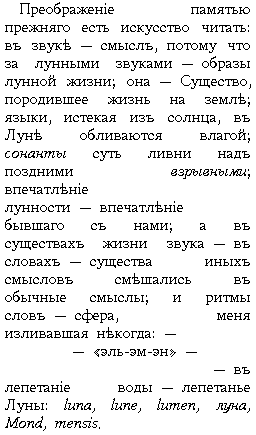

Glossolalia (Section 53)
GLOSSOLALIA

Impressions of sounds are -- notes to me: of lunar prattles; the Moon flows over into speech; and the mist of prattlings, and --
-- "Novelung"--
-- arises: it pours downpours; and -- they moisten all meanings; clarification is -- the outpouring of moisture; modifications, mindsets are -- rhythms; and fountains flow.

The transformation by memory of what has come previously is the art of reading: in sound is -- the meaning, because beyond the lunar sounds are -- images of the lunar life; this life is -- the Being, generating life on earth; tongues, flowing out of the sun, pour over moisture on the Moon; sonants are downpours above the latter plosives; the impression of lunarity is -- an impression of what was with us; but in the beings of the life of a sound -- in words -- beings of different meanings merged into commonplace meanings; and the rhythms of the words -- the sphere, once upon time into the prattling of the water --
-- "l-m-n"
-- poured itself out upon me -- the prattling of the Moon: luna, lune, lumen, moon [luna], Mond, mensis.